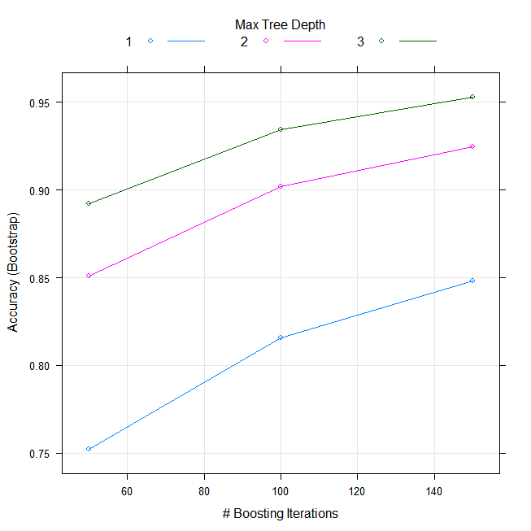
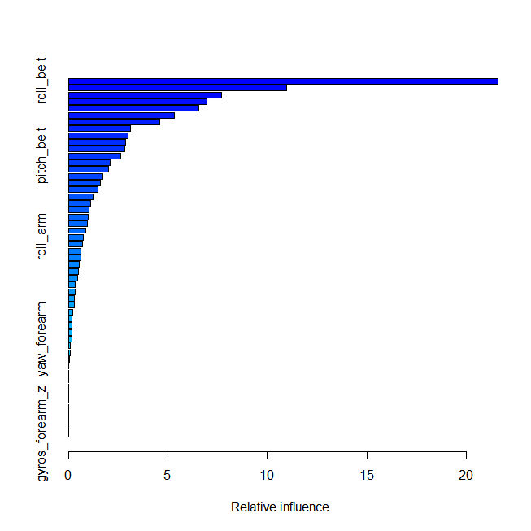
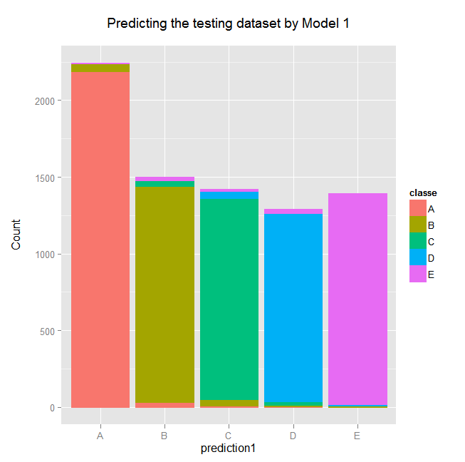
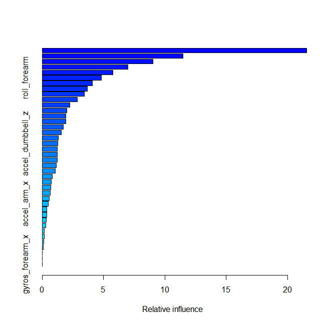
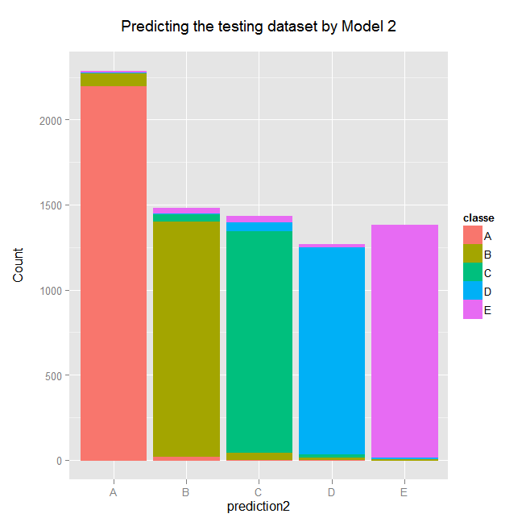

Investigation into qualitative activity recognition information from a dumbbell lifting exercise and the predictive ability of a boosting machine learning algorithm
AUTHOR: FE YOUNG
DATE: 2015 Nov 21
ABSTRACT
Velloso (2013) investigated whether machine learning algorithms could accurately detect erroneous methods of lifting a dumbbell.
Following on from their research this analysis performs a predicton using the boosting machine learning algorithm rather than best fit Random Forest approach.
The predictive ability of Model One generated an overall accuracy was 0.96 and removing eight zero influence predictors reduced Model Two to an overall accuracy to 0.95. Model One was used to evaluate the prediction accuracy information located in the validation dataset. Model One correctly identified all 20 validation cases.
INTRODUCTION
The six male test subjects were of 20 - 28 years of age and inexperienced in dumbbell weight lifting exercises. The dumbbell weighed 1.25 kg.
Each subject performed a set of 10 repetitions of a unilateral dumbbell bicep curl in five different ways. Class A corresponded to the correct execution of the exercise while methods B through E corresponded to common dumbbell lifting mistakes namely (B) throwing the elbow to the front; (C) dumbbell lifted halfway; (D) dumbbell lowered halfway; (E) throwing hips to the front.
The question addressed in this report is can a machine learning model correctly identify 20 validation cases?
METHODOLOGY
Loading R packages:
```{R preprocessing, cache = TRUE}
##1 - loading libraries
library(caret); library(ggplot2); library(data.table); library(plyr); library(dplyr); library(reshape2);
library(ggplot2); library(knitr); library(rmarkdown); library(YaleToolkit)
##NOTE - for knitr/rmarkdown to work in RCONSOLE you are required to download the PANDOC package available online at: http://pandoc.org/installing.html
```
Loading required package: lattice
Loading required package: ggplot2
data.table 1.9.6 For help type ?data.table or https://github.com/Rdatatable/data.table/wiki
The fastest way to learn (by data.table authors): https://www.datacamp.com/courses/data-analysis-the-data-table-way
Attaching package: dplyr
The following objects are masked from package:plyr:
arrange, count, desc, failwith, id, mutate, rename,
summarise, summarize
The following objects are masked from package:data.table:
between, last
The following objects are masked from package:stats:
filter, lag
The following objects are masked from package:base:
intersect, setdiff, setequal, union
Attaching package: reshape2
The following objects are masked from package:data.table:
dcast, melt
Loading required package: grid
What hardware/software combination did I use for this analysis?
```{r session info, cache = TRUE}
##2 - what hardware/software is this analysis using?
sessionInfo()
```
R version 3.2.2 (2015-08-14)
Platform: x86_64-w64-mingw32/x64 (64-bit)
Running under: Windows 8 x64 (build 9200)
locale:
[1] LC_COLLATE=English_United Kingdom.1252
[2] LC_CTYPE=English_United Kingdom.1252
[3] LC_MONETARY=English_United Kingdom.1252
[4] LC_NUMERIC=C
[5] LC_TIME=English_United Kingdom.1252
attached base packages:
[1] grid stats graphics grDevices utils datasets methods
[8] base
other attached packages:
[1] YaleToolkit_4.2.2 rmarkdown_0.8 knitr_1.11
[4] reshape2_1.4.1 dplyr_0.4.3 plyr_1.8.3
[7] data.table_1.9.6 caret_6.0-58 ggplot2_1.0.1
[10] lattice_0.20-33
loaded via a namespace (and not attached):
[1] Rcpp_0.12.1 nloptr_1.0.4 iterators_1.0.8
[4] tools_3.2.2 digest_0.6.8 lme4_1.1-9
[7] nlme_3.1-122 gtable_0.1.2 mgcv_1.8-7
[10] Matrix_1.2-2 foreach_1.4.3 DBI_0.3.1
[13] parallel_3.2.2 SparseM_1.7 proto_0.3-10
[16] stringr_1.0.0 MatrixModels_0.4-1 stats4_3.2.2
[19] nnet_7.3-11 R6_2.1.1 minqa_1.2.4
[22] car_2.1-0 magrittr_1.5 htmltools_0.2.6
[25] scales_0.3.0 codetools_0.2-14 MASS_7.3-44
[28] splines_3.2.2 assertthat_0.1 pbkrtest_0.4-2
[31] colorspace_1.2-6 quantreg_5.19 stringi_0.5-5
[34] munsell_0.4.2 chron_2.3-47
Loading the training and validation datasets. Exploration of the training dataset.
```{loading datasets, cache = TRUE}
##3 - loading datasets
#3.1 - trainingdataset
if(!file.exists('pml-training.csv')) {
download.file("https://d396qusza40orc.cloudfront.net/predmachlearn/pml-training.csv", destfile = "pml-training.csv")
}
training <- read.table("pml-training.csv", sep = ",", header = T)
##3.2 - validation dataset
if(!file.exists('pml-testing.csv')) {
download.file("https://d396qusza40orc.cloudfront.net/predmachlearn/pml-testing.csv", destfile = "pml-testing.csv")
}
validation <- read.table("pml-testing.csv", sep =",", header = T)
##4 - exploring datasets
dim(training); dim(validation); str(training, list.len = 160)
```
[1] 19622 160
[1] 20 160
'data.frame' : 19622 obs. of 160 variables:
$ X : int 1 2 3 4 5 6 7 8 9 10 ...
$ user_name : Factor w/ 6 levels "adelmo","carlitos",..: 2 2 2 2 2 2 2 2 2 2 ...
$ raw_timestamp_part_1 : int 1323084231 1323084231 1323084231 1323084232 1323084232 1323084232 1323084232 1323084232 1323084232 1323084232 ...
$ raw_timestamp_part_2 : int 788290 808298 820366 120339 196328 304277 368296 440390 484323 484434 ...
$ cvtd_timestamp : Factor w/ 20 levels "02/12/2011 13:32",..: 9 9 9 9 9 9 9 9 9 9 ...
$ new_window : Factor w/ 2 levels "no","yes": 1 1 1 1 1 1 1 1 1 1 ...
$ num_window : int 11 11 11 12 12 12 12 12 12 12 ...
$ roll_belt : num 1.41 1.41 1.42 1.48 1.48 1.45 1.42 1.42 1.43 1.45 ...
$ pitch_belt : num 8.07 8.07 8.07 8.05 8.07 8.06 8.09 8.13 8.16 8.17 ...
$ yaw_belt : num -94.4 -94.4 -94.4 -94.4 -94.4 -94.4 -94.4 -94.4 -94.4 -94.4 ...
...
The dataset consists of 19622 rows with 160 columns. Examination of the dataset concluded that 106 columns could be removed as they contained no valid information. These columns contained the words or abbreviations: kurtosis, mean, stddev, var, var_total, avg, skewness, max, min, new_window, num_window, amplitude. There are no columns with missing data or zero variance.
```{R removing columns & splitting dataset, cache = TRUE}
##5 - removing unwanted columns and dealing with missing data
##5.1 - including the words: kurtosis, mean, stddev, var, var_total, avg, skewness, max, min, new_window, num_window, amplitude and the time variables
trainingdata <- training[c(8:10, 37:48, 60:68, 84:86, 113:124, 151:160)]
validationdataset <- validation[c(8:10, 37:48, 60:68, 84:86, 113:124, 151:160)]
##5.2 - where zeroVar = 0 AND nzv = TRUE remove columns? NOTHING TO DEAL WITH
removezero1 <- nearZeroVar(trainingdata, saveMetrics = T)
removezero1
```
freqRatio percentUnique zeroVar nzv
roll_belt 1.101904 6.7781062 FALSE FALSE
pitch_belt 1.036082 9.3772296 FALSE FALSE
yaw_belt 1.058480 9.9734991 FALSE FALSE
gyros_belt_x 1.058651 0.7134849 FALSE FALSE
gyros_belt_y 1.144000 0.3516461 FALSE FALSE
gyros_belt_z 1.066214 0.8612782 FALSE FALSE
accel_belt_x 1.055412 0.8357966 FALSE FALSE
accel_belt_y 1.113725 0.7287738 FALSE FALSE
accel_belt_z 1.078767 1.5237998 FALSE FALSE
magnet_belt_x 1.090141 1.6664968 FALSE FALSE
...
```{r whatis, cache = TRUE}
##5.3 - is there any missing data to impute? NOTHING TO DEAL WITH
whatis(trainingdata)
```
variable.name type missing distinct.values precision min max
1 roll_belt numeric 0 1330 1e-02 -28.9 162
2 pitch_belt numeric 0 1840 1e-02 -55.8 60.3
3 yaw_belt numeric 0 1957 1e-02 -180 179
4 gyros_belt_x numeric 0 140 1e-02 -1.04 2.22
5 gyros_belt_y numeric 0 69 1e-02 -0.64 0.64
6 gyros_belt_z numeric 0 169 1e-02 -1.46 1.62
7 accel_belt_x numeric 0 164 1e+00 -120 85
8 accel_belt_y numeric 0 143 1e+00 -69 164
9 accel_belt_z numeric 0 299 1e+00 -275 105
10 magnet_belt_x numeric 0 327 1e+00 -52 485
...
It was decided to split the dataset into two randomly selected pieces using the createDataPartition command because of the large dataset size. The two pieces: 60% (11767 rows) for model training and 40% (7846 rows) for model testing were chosen by trial and error. The training model provided evidence that model accuracy increased as the size of training dataset was increased, but was constrained by computing power.
A validation dataset has been supplied containing 20 rows in order to fulfil the project requirement for this Data Science Specialism module. One point per row will be awarded for each correctly predicted answer by the generated model.
```{R splitting, cache = TRUE}
##6 - splitting the dataset 70:30 training:testing
split1 <- createDataPartition(y = trainingdata$classe, p = 0.6, list = FALSE)
trainingdataset <- trainingdata[split1, ]
testingdataset <- trainingdata[-split1, ]
dim(trainingdataset); dim(testingdataset)
```
[1] 11776 49
[1] 7846 49
The training model instructions required that the classe (A - E) variable was to be predicted by the model. To train the model the classe variable had to be removed so not to predict itself.
```{R premodelling, cache = TRUE}
##7 - classe ~ user_name + all variables INCLUDING PREPROCESSING
namestraining <- names(trainingdataset[c(-49)])
form <- as.formula(paste("classe~", paste(namestraining, collapse = "+"), sep = ""))
```
The choice of training model was related to its computational RAM (random access memory) expense, the time available to complete the module project analysis submission and the defined accuracy of the model compared to others as described by Jeff Leek in the video lecture on Boosting (see References). This led to the selection of the boosting model - command "gbm".
Preprocessing of the training dataset was performed at the same time as model training and it centred and scaled the all variables. If any other preprocessing commands were added to the model the computer produced a BSoD (blue screen of death).
The boosting model on the training dataset was run several times and each time there was a slightly different accuracy output so for reproducibility a seed was set, number 1258 was used.
```{R training model, cache = TRUE}
##8 - Model 1
set.seed(1258)
model1 <- train(form, data = trainingdataset, preProcess = c("scale", "center"), method = "gbm", verbose = F)
```
On completion of the model it was noted that eight predictors had no model influence and were removed from the training dataset. The predictors are accel_belt_x, accel_belt_y, pitch_arm, gyros_arm_z, accel_arm_y, yaw_dumbbell, yaw_forearm and gyros_forearm_y.
```{r removal}
##9 - removing additional variables
trainingdataset2 <- trainingdataset[c(1:6, 9:13, 15:17, 19, 21:26, 28:38, 40, 42:49)]
dim(trainingdataset2)
```
[1] 11776 41
The model was run again without these eight predictors for the purpose of cross validation with 50% of the original training dataset rows randomly chosen. Would the model accuracy improved without these eight variables?
```{r splitting 2}
##10 - splitting the training dataset into 2 pieces 50:50
split2 <- createDataPartition(y = trainingdataset2$classe, p = 0.5, list = FALSE)
trainingdataset3 <- trainingdataset2[split2, ]
##11 - removing the classe variable
namestraining <- names(trainingdataset3[c(-41)])
form2 <- as.formula(paste("classe~", paste(namestraining, collapse = "+"), sep = ""))
##12 - MODEL 2
model2 <- train(form2, data = trainingdataset3, preProcess = c("scale", "center"), method = "gbm", verbose = F)
```
On satisfactory training of the final model it was used to predict the validation dataset.
RESULTS
The results from the Model One and its predictive accuracy on the testing dataset:
```{r boosting model 1, cache = TRUE}
##13 - Model 1 results
print(model1$finalModel)
plot(model1)
summary(model1)
prediction1 <- predict(model1, testingdataset)
qplot(prediction1, colour = classe, fill = classe, data = testingdataset, main = "Predicting the testing dataset by Model 1\n", ylab = "Count\n")
confusionMatrix(testingdataset$classe, predict(model1, testingdataset))
```
A gradient boosted model with multinomial loss function.
150 iterations were performed.
There were 48 predictors of which 39 had non-zero influence.

summary(model1)

var rel.inf
roll_belt 21.83897809
pitch_forearm 11.36695394
yaw_belt 8.97865050
magnet_dumbbell_z 6.57919727
magnet_dumbbell_y 5.74142037
roll_forearm 5.14858798
magnet_belt_z 3.99357158
pitch_belt 3.37862292
accel_forearm_x 3.31485298
...

Confusion Matrix and Statistics
Reference
Prediction A B C D E
A 2204 19 6 3 0
B 55 1428 31 2 2
C 0 44 1300 24 0
D 1 4 42 1228 11
E 2 27 18 21 1374
Overall Statistics
Accuracy : 0.9602
95% CI : (0.9557, 0.9645)
No Information Rate : 0.2883
P-Value [Acc > NIR] : < 2.2e-16
Kappa : 0.9497
Mcnemar's Test P-Value : 1.922e-12
Statistics by Class:
Class: A Class: B Class: C Class: D Class: E
Sensitivity 0.9744 0.9382 0.9306 0.9609 0.9906
Specificity 0.9950 0.9858 0.9895 0.9912 0.9895
Pos Pred Value 0.9875 0.9407 0.9503 0.9549 0.9528
Neg Pred Value 0.9897 0.9851 0.9850 0.9924 0.9980
Prevalence 0.2883 0.1940 0.1781 0.1629 0.1768
Detection Rate 0.2809 0.1820 0.1657 0.1565 0.1751
Detection Prevalence 0.2845 0.1935 0.1744 0.1639 0.1838
Balanced Accuracy 0.9847 0.9620 0.9600 0.9760 0.9900
The resultant statistical output was examined. The overall accuracy of the model was 0.96. The positive predictive value (PPV) was over 0.95 for classes A, C to E and class B above 0.94 whereas the negative predictive value (NPV) was above 0.98 for all classes.
The results for Model Two (below) demonstrated that removing the eight predictors reduced the accuracy of the boosting model from 0.96 to 0.95. The PPV was reduced for four of the classes to 0.94 but class B reduced to 0.91. For NPV all class values were above 0.98. As the accuracy of the model dropped without these eight predictors the first model was chosen to make predictions for the validation dataset.
```{r boosting model 2, cache = TRUE}
##14 - Model 2 results
print(model2$finalModel)
summary(model2)
prediction2 <- predict(model2, testingdataset)
qplot(prediction2, colour = classe, fill = classe, data = testingdataset, main = "Predicting the testing dataset by Model 2\n", ylab = "Count\n")
confusionMatrix(testingdataset$classe, predict(model2, testingdataset))
```
A gradient boosted model with multinomial loss function.
150 iterations were performed.
There were 40 predictors of which 38 had non-zero influence.
summary(model2)

var rel.inf
roll_belt 20.41139035
pitch_forearm 11.13230517
yaw_belt 8.57040521
magnet_dumbbell_z 7.38331461
magnet_dumbbell_y 5.62204502
roll_forearm 4.81180232
pitch_belt 4.22906941
magnet_belt_z 4.10488396
gyros_belt_z 3.48826302
accel_forearm_x 2.93847954
...

Confusion Matrix and Statistics
Reference
Prediction A B C D E
A 2202 17 10 3 0
B 79 1385 48 3 3
C 0 49 1297 21 1
D 1 3 56 1213 13
E 5 26 32 20 1359
Overall Statistics
Accuracy : 0.9503
95% CI : (0.9453, 0.955)
No Information Rate : 0.2915
P-Value [Acc > NIR] : < 2.2e-16
Kappa : 0.9371
Mcnemar's Test P-Value : < 2.2e-16
Statistics by Class:
Class: A Class: B Class: C Class: D Class: E
Sensitivity 0.9628 0.9358 0.8988 0.9627 0.9876
Specificity 0.9946 0.9791 0.9889 0.9889 0.9872
Pos Pred Value 0.9866 0.9124 0.9481 0.9432 0.9424
Neg Pred Value 0.9849 0.9850 0.9775 0.9928 0.9973
Prevalence 0.2915 0.1886 0.1839 0.1606 0.1754
Detection Rate 0.2807 0.1765 0.1653 0.1546 0.1732
Detection Prevalence 0.2845 0.1935 0.1744 0.1639 0.1838
Balanced Accuracy 0.9787 0.9575 0.9439 0.9758 0.9874
The prediction results of the 20 validation cases using Model One:
```{r validation predictions, cache = TRUE}
##15 - Predictions with Model 1
predict(model1, validationdataset)
```
[1] B A B A A E D B A A B C B A E E A B B B
Levels: A B C D E
Of the 20 cases all 20 have been correctly predicted.
REFERENCES
Velloso E, Bulling A, Gellersen H, Ugulino W, Fuks H (2013) Qualitative Activity Recognition of Weight Lifting Exercises, Proceedings of the 4th International Conference in Cooperation with SIGCHI (Augmented Human 2013), Stuttgart, Germany
Guillaume Bourgault & Chris W (2015) Distribution of each variable for each test subject and each class (A - E) online at https://class.coursera.org/predmachlearn-034/forum/thread?thread_id=20
Leek J (2015) Boosting video lecture available online at https://class.coursera.org/predmachlearn-034/lecture/49
APPENDICES
APPENDIX 1: Codebook
Abbreviations for parts of the column names:-
gyros <- gyroscope
x <- x axis
y <- y axis
z <- z axis
accel <- accelerometer
magnet <- magnetometer
Meaning of classe headings:-
(A) correct execution of the exercise
(B) throwing the elbow to the front
(C) dumbbell lifted halfway
(D) dumbbell lowered halfway
(E) throwing hips to the front
Position of sensors:-
belt around the waist
arm around the upper arm
forearm around the lower arm
dumbbell on the end of the dumbbell
APPENDIX 2
The information for this project comes from these sources:
http://groupware.les.inf.puc-rio.br/har
The links to the datasets are:
Entire dataset:
https://d396qusza40orc.cloudfront.net/predmachlearn/pml-training.csv
Validation dataset:
https://d396qusza40orc.cloudfront.net/predmachlearn/pml-testing.csv
APPENDIX 3
With only 2 GB of hard disk space the html document could not be constructed within the R package. Therefore I had to write the whole html file myself using Notepad++. So if the result tables look a little strange and columns not correctly aligned this is the reason why.
```{r html}
render("project.Rmd", html_document(), quiet = T)
```